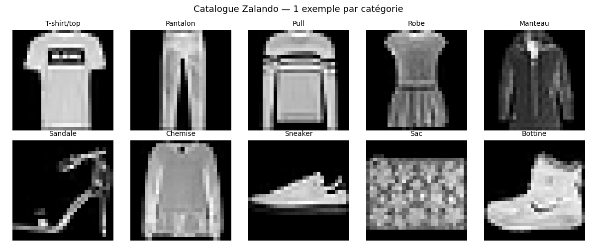
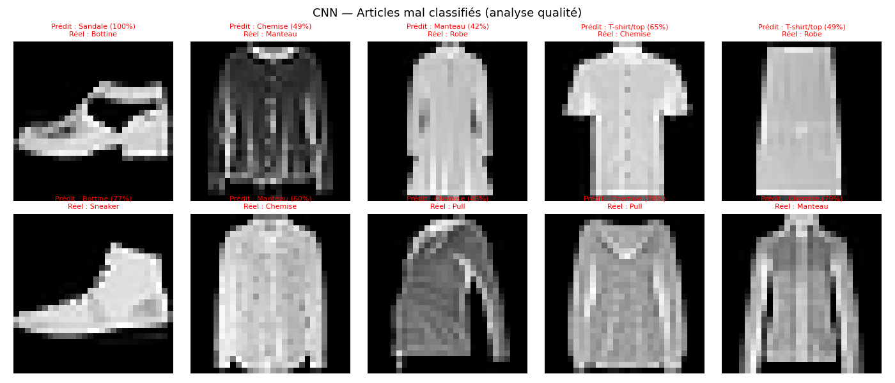
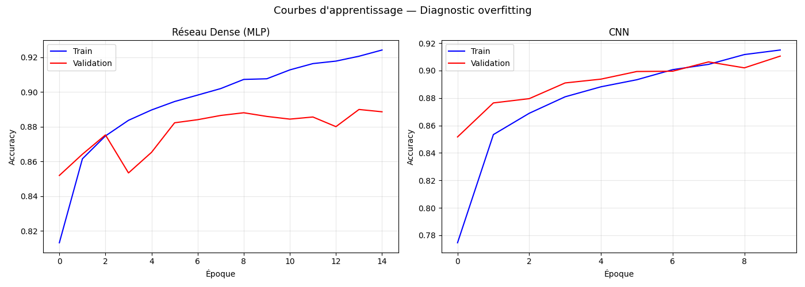

Salut Mehdi ! 👋
Prêt pour le grand saut dans le Deep Learning ? On va décrypter ton TP3 sur la reconnaissance d'articles Zalando !
1. Ton nouveau terrain de jeu : Fashion-MNIST 👕
Fini les fleurs, on passe à la mode ! Tu travailles sur 70 000 images de vêtements (28x28 pixels).

🧐 Le défi : Contrairement aux chiffres (MNIST classique), un pull et un t-shirt se ressemblent énormément pour une machine. Il faut des modèles capables de saisir des nuances de texture et de forme !
2. La Guerre des Architectures ⚔️
Tu as opposé trois approches pour voir laquelle est la plus intelligente :
Random Forest
Le "Vieux Sage"
~87%
Lent et limité sur l'image.
MLP (Dense)
Le "Réseau Simple"
~88%
Un peu mieux, mais s'emmêle les pinceaux.
CNN
Le "Champion"
~91%
C'est lui le boss de la vision ! 🏆
🚀 Pourquoi le CNN gagne ? Parce qu'il regarde l'image par "blocs" (convolution) au lieu de regarder chaque pixel isolément. Il comprend la notion de "manche", de "col" ou de "semelle" !
3. Visualiser le cerveau de l'IA 🧠
Regarde ce que ton CNN "voit" quand il regarde une basket (Sneaker) :

💡 Incroyable, non ? Chaque filtre se spécialise. Un filtre détecte les bords verticaux, un autre les textures, un autre les ombres. C'est comme ça qu'il arrive à une telle précision !
4. L'Analyse des Échecs (Qualité) ❌
Même le champion fait des erreurs. Regarde où il s'est trompé :

🕵️♂️ L'oeil de l'expert : La plupart des erreurs viennent de la confusion entre
Pull, Manteau et Chemise. En noir et blanc (28x28), c'est parfois difficile même pour un humain de faire la différence ! Ton modèle est donc très proche de la limite humaine.5. Diagnostic : Overfitting ? 📈

📉 La bonne nouvelle : Tes courbes de Train et de Validation restent proches. Ça veut dire que ton modèle GÉNÉRALISE bien. Il n'a pas juste appris le catalogue par cœur, il a vraiment compris ce qu'est un vêtement !
Félicitations Mehdi ! Tu as dompté les réseaux de neurones.
Le Deep Learning et les CNN n'ont plus de secret pour toi ! 🚀
Le Deep Learning et les CNN n'ont plus de secret pour toi ! 🚀